Web Server Statistics for cyberpollution.org
Web Server Statistics for cyberpollution.org
Program started on Fri, Aug 31 2018 at 12:10 PM.
Analyzed requests from Tue, Jul 31 2018 at 6:05 AM to Fri, Aug 31 2018 at 11:41 AM (31.23 days).
Web Server Statistics for cyberpollution.orgProgram started on Fri, Aug 31 2018 at 12:10 PM.
Analyzed requests from Tue, Jul 31 2018 at 6:05 AM to Fri, Aug 31 2018 at 11:41 AM (31.23 days).
(Go To: Top | General Summary | Monthly Report | Daily Summary | Hourly Summary | Domain Report | Organization Report | Redirected Referrer Report | Failed Referrer Report | Referring Site Report | Browser Report | Browser Summary | Operating System Report | Status Code Report | File Size Report | File Type Report | Directory Report | Request Report)
Figures in parentheses refer to the 7-day period ending Aug 31 2018 at 12:10 PM.
Successful requests: 9,619 (3,456)
Average successful requests per day: 307 (493)
Successful requests for pages: 1,519 (680)
Average successful requests for pages per day: 48 (97)
Failed requests: 327 (98)
Redirected requests: 1,555 (145)
Distinct files requested: 1,913 (368)
Distinct hosts served: 1 (1)
Data transferred: 378.73 megabytes (138.60 megabytes)
Average data transferred per day: 12.13 megabytes (19.80 megabytes)
(Go To: Top | General Summary | Monthly Report | Daily Summary | Hourly Summary | Domain Report | Organization Report | Redirected Referrer Report | Failed Referrer Report | Referring Site Report | Browser Report | Browser Summary | Operating System Report | Status Code Report | File Size Report | File Type Report | Directory Report | Request Report)
Each unit ( ) represents 40 requests for pages or part thereof.
) represents 40 requests for pages or part thereof.
| month | #reqs | #pages | |
|---|---|---|---|
| Jul 2018 | 2 | 0 | |
| Aug 2018 | 9617 | 1519 |    |
Busiest month: Aug 2018 (1,519 requests for pages).
(Go To: Top | General Summary | Monthly Report | Daily Summary | Hourly Summary | Domain Report | Organization Report | Redirected Referrer Report | Failed Referrer Report | Referring Site Report | Browser Report | Browser Summary | Operating System Report | Status Code Report | File Size Report | File Type Report | Directory Report | Request Report)
Each unit () represents 15 requests for pages or part thereof.
| day | #reqs | #pages | |
|---|---|---|---|
| Sun | 1623 | 227 |  |
| Mon | 1262 | 117 |  |
| Tue | 1319 | 183 | |
| Wed | 1688 | 189 | |
| Thu | 2005 | 477 | |
| Fri | 735 | 187 | |
| Sat | 987 | 139 | |
(Go To: Top | General Summary | Monthly Report | Daily Summary | Hourly Summary | Domain Report | Organization Report | Redirected Referrer Report | Failed Referrer Report | Referring Site Report | Browser Report | Browser Summary | Operating System Report | Status Code Report | File Size Report | File Type Report | Directory Report | Request Report)
Each unit () represents 5 requests for pages or part thereof.
| hour | #reqs | #pages | |
|---|---|---|---|
| 0 | 255 | 57 | |
| 1 | 373 | 60 | |
| 2 | 242 | 81 | |
| 3 | 473 | 86 | |
| 4 | 361 | 44 | |
| 5 | 182 | 68 | |
| 6 | 217 | 23 | |
| 7 | 334 | 32 | |
| 8 | 238 | 33 | |
| 9 | 386 | 130 | |
| 10 | 290 | 49 | |
| 11 | 370 | 41 | |
| 12 | 290 | 51 | |
| 13 | 232 | 27 | |
| 14 | 703 | 47 | |
| 15 | 1431 | 214 | |
| 16 | 755 | 80 | |
| 17 | 537 | 48 | |
| 18 | 369 | 35 | |
| 19 | 390 | 51 | |
| 20 | 179 | 20 | |
| 21 | 210 | 25 | |
| 22 | 215 | 46 | |
| 23 | 587 | 171 | |
(Go To: Top | General Summary | Monthly Report | Daily Summary | Hourly Summary | Domain Report | Organization Report | Redirected Referrer Report | Failed Referrer Report | Referring Site Report | Browser Report | Browser Summary | Operating System Report | Status Code Report | File Size Report | File Type Report | Directory Report | Request Report)
Listing domains, sorted by the amount of traffic.
| #reqs | %bytes | domain |
|---|---|---|
| 9619 | 100% | [unresolved numerical addresses] |
(Go To: Top | General Summary | Monthly Report | Daily Summary | Hourly Summary | Domain Report | Organization Report | Redirected Referrer Report | Failed Referrer Report | Referring Site Report | Browser Report | Browser Summary | Operating System Report | Status Code Report | File Size Report | File Type Report | Directory Report | Request Report)
Listing organizations, sorted by the number of requests.
| #reqs | %bytes | organization |
|---|---|---|
| 9619 | 100% | 192.99 |
(Go To: Top | General Summary | Monthly Report | Daily Summary | Hourly Summary | Domain Report | Organization Report | Redirected Referrer Report | Failed Referrer Report | Referring Site Report | Browser Report | Browser Summary | Operating System Report | Status Code Report | File Size Report | File Type Report | Directory Report | Request Report)
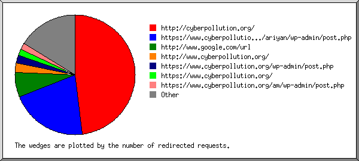
Listing the top 30 referring URLs by the number of redirected requests, sorted by the number of redirected requests.
(Go To: Top | General Summary | Monthly Report | Daily Summary | Hourly Summary | Domain Report | Organization Report | Redirected Referrer Report | Failed Referrer Report | Referring Site Report | Browser Report | Browser Summary | Operating System Report | Status Code Report | File Size Report | File Type Report | Directory Report | Request Report)
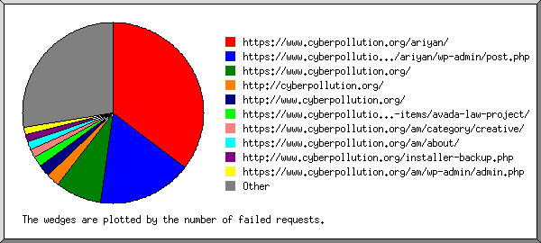
Listing referring URLs, sorted by the number of failed requests.
(Go To: Top | General Summary | Monthly Report | Daily Summary | Hourly Summary | Domain Report | Organization Report | Redirected Referrer Report | Failed Referrer Report | Referring Site Report | Browser Report | Browser Summary | Operating System Report | Status Code Report | File Size Report | File Type Report | Directory Report | Request Report)
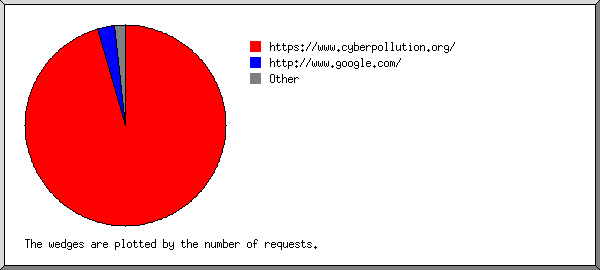
Listing referring sites, sorted by the number of requests.
| #reqs | site |
|---|---|
| 5549 | https://www.cyberpollution.org/ |
| 406 | http://www.google.com/ |
| 186 | https://www.google.com/ |
| 46 | https://192.99.3.110/ |
| 14 | http://www.cyberpollution.org/ |
| 10 | http://cyberpollution.org/ |
| 5 | https://yandex.ru/ |
| 2 | www.cyberpollution.org:80/ |
| 2 | android-app://com.google.android.googlequicksearchbox/ |
| 2 | http://sucuri.net/ |
| 2 | http://www.facebook.com/ |
| 1 | http://burger-imperia.com/ |
| 1 | https://www.freelancer.com/ |
| 1 | https://google.com:/ |
| 1 | https://google.com/ |
| 1 | http://www.bing.com/ |
| 1 | http://l.facebook.com/ |
| 1 | http://m.facebook.com/ |
| 1 | https://web.facebook.com/ |
| 1 | http://facebook.com/ |
(Go To: Top | General Summary | Monthly Report | Daily Summary | Hourly Summary | Domain Report | Organization Report | Redirected Referrer Report | Failed Referrer Report | Referring Site Report | Browser Report | Browser Summary | Operating System Report | Status Code Report | File Size Report | File Type Report | Directory Report | Request Report)
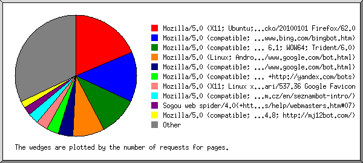
Listing the top 40 browsers by the number of requests for pages, sorted by the number of requests for pages.
| #reqs | #pages | browser |
|---|---|---|
| 935 | 248 | Mozilla/5.0 (compatible; bingbot/2.0; +http://www.bing.com/bingbot.htm) |
| 756 | 221 | Mozilla/5.0 (Linux; Android 6.0.1; Nexus 5X Build/MMB29P) AppleWebKit/537.36 (KHTML, like Gecko) Chrome/41.0.2272.96 Mobile Safari/537.36 (compatible; Googlebot/2.1; +http://www.google.com/bot.html) |
| 404 | 172 | Mozilla/5.0 (compatible; MSIE 9.0; Windows NT 6.1; WOW64; Trident/6.0) |
| 239 | 125 | Mozilla/5.0 (compatible; Googlebot/2.1; +http://www.google.com/bot.html) |
| 275 | 78 | Mozilla/5.0 (X11; Linux x86_64) AppleWebKit/537.36 (KHTML, like Gecko) Chrome/49.0.2623.75 Safari/537.36 Google Favicon |
| 101 | 54 | Mozilla/5.0 (compatible; SeznamBot/3.2; +http://napoveda.seznam.cz/en/seznambot-intro/) |
| 73 | 49 | Mozilla/5.0 (compatible; MJ12bot/v1.4.8; http://mj12bot.com/) |
| 189 | 45 | Wget/1.12 (linux-gnu) |
| 152 | 41 | Mozilla/5.0 (compatible; YandexBot/3.0; +http://yandex.com/bots) |
| 1176 | 38 | Mozilla/5.0 (X11; Ubuntu; Linux i686; rv:61.0) Gecko/20100101 Firefox/61.0 |
| 104 | 38 | Mozilla/5.0 (iPhone; U; CPU iPhone OS 4_3_3 like Mac OS X; en-us) AppleWebKit/533.17.9 (KHTML, like Gecko) Version/5.0.2 Mobile/8J2 Safari/6533.18.5 |
| 28 | 28 | Mozilla/5.0 (Windows NT 10.0) AppleWebKit/537.36 (KHTML, like Gecko) Chrome/54.0.2840.71 Safari/537.36 |
| 24 | 24 | Sogou web spider/4.0(+http://www.sogou.com/docs/help/webmasters.htm#07) |
| 22 | 22 | Mozilla/5.0 (Macintosh; Intel Mac OS X 10_12_6) AppleWebKit/537.36 (KHTML, like Gecko) Chrome/61.0.3163.100 Safari/537.36 |
| 20 | 20 | Mozilla/5.0 (Macintosh; Intel Mac OS X 10.12; rv:52.0) Gecko/20100101 Firefox/52.0 |
| 21 | 20 | Mozilla/5.0 (compatible; spbot/5.0.3; +http://OpenLinkProfiler.org/bot ) |
| 61 | 15 | Mozilla/5.0 (X11; Linux x86_64) AppleWebKit/537.36 (KHTML, like Gecko) Chrome/67.0.3396.99 Safari/537.36 |
| 30 | 15 | Mozilla/5.0 (compatible; WPScans/1.0; +https://wpscans.com) |
| 15 | 14 | Mozilla/5.0 (compatible; Baiduspider/2.0; +http://www.baidu.com/search/spider.html) |
| 115 | 14 | SiteLockSpider [en] (WinNT; I ;Nav) |
| 45 | 13 | Mozilla/5.0 (X11; U; Linux i686) Gecko/20071127 Firefox/2.0.0.11 |
| 13 | 11 | Mozilla/5.0 (compatible; Dataprovider.com;) |
| 530 | 9 | Mozilla/5.0 (X11; Linux i686) AppleWebKit/537.36 (KHTML, like Gecko) Ubuntu Chromium/68.0.3440.75 Chrome/68.0.3440.75 Safari/537.36 |
| 8 | 8 | python-requests/2.19.1 |
| 7 | 7 | Mozilla/4.0 (compatible; MSIE 6.0; Windows NT 5.1; SV1) |
| 5 | 5 | Mozilla/5.0 (compatible; MSIE 8.0; MSIE 9.0; Windows NT 6.0; Trident/4.0; InfoPath.1; SV1; .NET CLR 3.8.36217; WOW64; en-US) |
| 5 | 5 | Python-urllib/2.7 |
| 4 | 4 | Mozilla/5.0 zgrab/0.x (compatible; Researchscan/t12sns; +http://researchscan.comsys.rwth-aachen.de) |
| 172 | 4 | Mozilla/5.0 (X11; Ubuntu; Linux x86_64; rv:50.0) Gecko/20100101 Firefox/50.0 |
| 122 | 4 | Opera/9.80 (MAUI Runtime; Opera Mini/4.4.39016/108.110; U; en) Presto/2.12.423 Version/12.16 |
| 72 | 4 | Mozilla/5.0 (Windows NT 6.1; Win64; x64) AppleWebKit/537.36 (KHTML, like Gecko) Chrome/67.0.3396.99 Safari/537.36 |
| 5 | 4 | Mozilla/5.0 (compatible; ips-agent) |
| 4 | 4 | Mozilla/5.0 zgrab/0.x (compatible; Researchscan/t12ca; +http://researchscan.comsys.rwth-aachen.de) |
| 145 | 3 | Mozilla/5.0 (Windows NT 6.1; WOW64) AppleWebKit/537.36 (KHTML, like Gecko) Chrome/37.0.2062.120 Safari/537.36 |
| 3 | 3 | Mozilla/5.0 zgrab/0.x (compatible; Researchscan/t13rl; +http://researchscan.comsys.rwth-aachen.de) |
| 95 | 3 | Mozilla/5.0 (X11; Linux x86_64) AppleWebKit/537.36 (KHTML, like Gecko) Chrome/70.0.3508.0 Safari/537.36 |
| 547 | 3 | Mozilla/5.0 AppleWebKit/537.36 (KHTML, like Gecko; compatible; Googlebot/2.1; +http://www.google.com/bot.html) Safari/537.36 |
| 2 | 2 | Mozilla/5.0 (Windows NT 6.2; Win64; x64) AppleWebKit/537.36 (KHTML, like Gecko) |
| 14 | 2 | facebookexternalhit/1.1 (+http://www.facebook.com/externalhit_uatext.php) |
| 3 | 2 | Android 4.1.1; Nexus 7 Build/JRO03D) AppleWebKit/535.19 (KHTML, ipad, iphone, java/midp, like Gecko) Opera/10.0.1025.166 Safari/535.19 |
| 3011 | 73 | [not listed: 131 browsers] |
(Go To: Top | General Summary | Monthly Report | Daily Summary | Hourly Summary | Domain Report | Organization Report | Redirected Referrer Report | Failed Referrer Report | Referring Site Report | Browser Report | Browser Summary | Operating System Report | Status Code Report | File Size Report | File Type Report | Directory Report | Request Report)
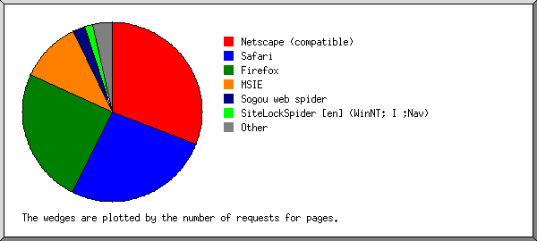
Listing browsers with at least 1 request for a page, sorted by the number of requests for pages.
| # | #reqs | #pages | browser |
|---|---|---|---|
| 1 | 1609 | 595 | Netscape (compatible) |
| 2 | 3539 | 469 | Safari |
| 3278 | 417 | Safari/537 | |
| 104 | 38 | Safari/6533 | |
| 61 | 4 | Safari/535 | |
| 3 | 2 | Safari/532 | |
| 2 | 2 | Safari/533 | |
| 34 | 2 | Safari/534 | |
| 54 | 1 | Safari/538 | |
| 1 | 1 | Safari/601 | |
| 1 | 1 | Safari/528 | |
| 3 | 503 | 186 | MSIE |
| 404 | 172 | MSIE/9 | |
| 8 | 8 | MSIE/6 | |
| 50 | 6 | MSIE/8 | |
| 4 | 2297 | 92 | Firefox |
| 1303 | 41 | Firefox/61 | |
| 20 | 20 | Firefox/52 | |
| 45 | 13 | Firefox/2 | |
| 173 | 4 | Firefox/50 | |
| 4 | 2 | Firefox/40 | |
| 3 | 2 | Firefox/47 | |
| 2 | 2 | Firefox/57 | |
| 2 | 2 | Firefox/59 | |
| 18 | 2 | Firefox/3 | |
| 1 | 1 | Firefox/21 | |
| 5 | 189 | 45 | Wget |
| 189 | 45 | Wget/1 | |
| 6 | 24 | 24 | Sogou web spider |
| 24 | 24 | Sogou web spider/4 | |
| 7 | 115 | 14 | SiteLockSpider [en] (WinNT; I ;Nav) |
| 8 | 8 | 8 | python-requests |
| 8 | 8 | python-requests/2 | |
| 9 | 154 | 5 | Opera |
| 122 | 4 | Opera/9 | |
| 32 | 1 | Opera/10 | |
| 10 | 276 | 5 | Mozilla |
| 11 | 5 | 5 | Python-urllib |
| 5 | 5 | Python-urllib/2 | |
| 12 | 14 | 2 | facebookexternalhit |
| 14 | 2 | facebookexternalhit/1 | |
| 13 | 2 | 2 | Grammarly |
| 2 | 2 | Grammarly/1 | |
| 14 | 1 | 1 | Googlebot |
| 1 | 1 | Googlebot/2 | |
| 15 | 2 | 1 | netEstate NE Crawler (+http: |
| 2 | 1 | netEstate NE Crawler (+http://www | |
| 814 | 0 | [not listed: 7 browsers] |
(Go To: Top | General Summary | Monthly Report | Daily Summary | Hourly Summary | Domain Report | Organization Report | Redirected Referrer Report | Failed Referrer Report | Referring Site Report | Browser Report | Browser Summary | Operating System Report | Status Code Report | File Size Report | File Type Report | Directory Report | Request Report)
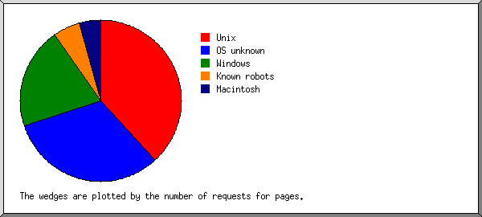
Listing operating systems, sorted by the number of requests for pages.
| # | #reqs | #pages | OS |
|---|---|---|---|
| 1 | 3057 | 613 | OS unknown |
| 2 | 3976 | 448 | Unix |
| 3976 | 448 | Linux | |
| 3 | 2066 | 253 | Windows |
| 1889 | 207 | Unknown Windows | |
| 121 | 35 | Windows NT | |
| 56 | 11 | Windows XP | |
| 4 | 211 | 86 | Macintosh |
| 5 | 242 | 54 | Known robots |
(Go To: Top | General Summary | Monthly Report | Daily Summary | Hourly Summary | Domain Report | Organization Report | Redirected Referrer Report | Failed Referrer Report | Referring Site Report | Browser Report | Browser Summary | Operating System Report | Status Code Report | File Size Report | File Type Report | Directory Report | Request Report)
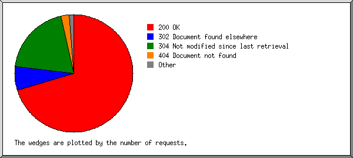
Listing status codes, sorted numerically.
| #reqs | status code |
|---|---|
| 8850 | 200 OK |
| 185 | 301 Document moved permanently |
| 1370 | 302 Document found elsewhere |
| 769 | 304 Not modified since last retrieval |
| 1 | 400 Bad request |
| 304 | 404 Document not found |
| 13 | 405 Method not allowed |
| 5 | 500 Internal server error |
| 2 | 503 Service temporarily unavailable |
| 2 | 504 Gateway timeout |
(Go To: Top | General Summary | Monthly Report | Daily Summary | Hourly Summary | Domain Report | Organization Report | Redirected Referrer Report | Failed Referrer Report | Referring Site Report | Browser Report | Browser Summary | Operating System Report | Status Code Report | File Size Report | File Type Report | Directory Report | Request Report)
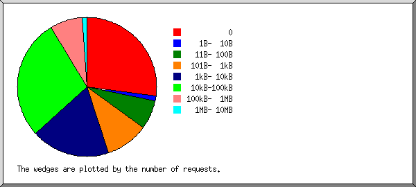
| size | #reqs | %bytes |
|---|---|---|
| 0 | 1757 | |
| 1B- 10B | 17 | |
| 11B- 100B | 296 | |
| 101B- 1kB | 680 | 0.09% |
| 1kB- 10kB | 2414 | 2.12% |
| 10kB-100kB | 3684 | 40.97% |
| 100kB- 1MB | 763 | 54.04% |
| 1MB- 10MB | 8 | 2.78% |
(Go To: Top | General Summary | Monthly Report | Daily Summary | Hourly Summary | Domain Report | Organization Report | Redirected Referrer Report | Failed Referrer Report | Referring Site Report | Browser Report | Browser Summary | Operating System Report | Status Code Report | File Size Report | File Type Report | Directory Report | Request Report)
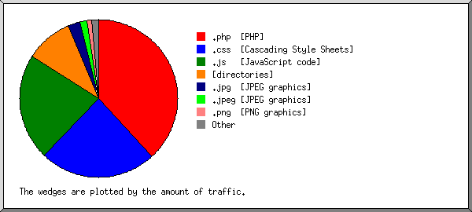
Listing extensions with at least 0.1% of the traffic, sorted by the amount of traffic.
| #reqs | %bytes | extension |
|---|---|---|
| 1615 | 37.48% | .css [Cascading Style Sheets] |
| 3014 | 28.58% | .js [JavaScript code] |
| 1489 | 17.09% | [directories] |
| 1790 | 9.85% | .php [PHP] |
| 105 | 3.19% | .jpg [JPEG graphics] |
| 21 | 0.84% | .ttf |
| 168 | 0.79% | .jpeg [JPEG graphics] |
| 307 | 0.72% | .txt [Plain text] |
| 460 | 0.34% | .png [PNG graphics] |
| 20 | 0.31% | .woff2 |
| 55 | 0.28% | .svg |
| 25 | 0.19% | .woff |
| 550 | 0.34% | [not listed: 8 extensions] |
(Go To: Top | General Summary | Monthly Report | Daily Summary | Hourly Summary | Domain Report | Organization Report | Redirected Referrer Report | Failed Referrer Report | Referring Site Report | Browser Report | Browser Summary | Operating System Report | Status Code Report | File Size Report | File Type Report | Directory Report | Request Report)
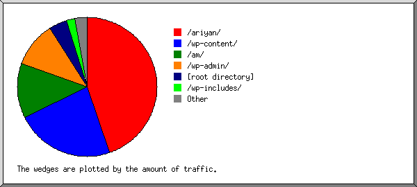
Listing directories with at least 0.01% of the traffic, sorted by the amount of traffic.
| #reqs | %bytes | directory |
|---|---|---|
| 4388 | 47.98% | /wp-content/ |
| 1031 | 27.83% | /am/ |
| 2592 | 8.90% | [root directory] |
| 195 | 5.87% | /wp-admin/ |
| 560 | 2.57% | /wp-includes/ |
| 115 | 1.05% | /about/ |
| 31 | 0.56% | /pricing/ |
| 44 | 0.45% | /contact/ |
| 37 | 0.33% | /placed-an-order-2/ |
| 30 | 0.32% | /project/ |
| 41 | 0.29% | /category/ |
| 32 | 0.27% | /get-involved/ |
| 32 | 0.27% | /donations/ |
| 25 | 0.27% | /events/ |
| 34 | 0.27% | /digital-forensic/ |
| 31 | 0.25% | /our-vission/ |
| 17 | 0.23% | /projects/ |
| 27 | 0.21% | /website-hacked/ |
| 27 | 0.21% | /about-us/ |
| 25 | 0.19% | /cyber-security/ |
| 24 | 0.19% | /event-response/ |
| 24 | 0.18% | /emergency/ |
| 84 | 0.16% | /wp-json/ |
| 18 | 0.15% | /fw-event-slug/ |
| 19 | 0.14% | /image-gallery/ |
| 16 | 0.12% | /dosdenial-of-service-attacks/ |
| 14 | 0.10% | /cross-site-scripting-xss/ |
| 4 | 0.10% | /search/ |
| 12 | 0.09% | /donation-history/ |
| 8 | 0.06% | /sql-injection-attack/ |
| 8 | 0.06% | /session-hijacking/ |
| 7 | 0.05% | /donation-confirmation/ |
| 11 | 0.05% | /tag/ |
| 7 | 0.05% | /malware-remove/ |
| 6 | 0.05% | /transaction-failed/ |
| 6 | 0.04% | /man-in-the-middle-attacks/ |
| 6 | 0.04% | /pricing-2/ |
| 2 | 0.02% | /donate/ |
| 1 | 0.01% | /page/ |
| 28 | 0.01% | [not listed: 5 directories] |
(Go To: Top | General Summary | Monthly Report | Daily Summary | Hourly Summary | Domain Report | Organization Report | Redirected Referrer Report | Failed Referrer Report | Referring Site Report | Browser Report | Browser Summary | Operating System Report | Status Code Report | File Size Report | File Type Report | Directory Report | Request Report)
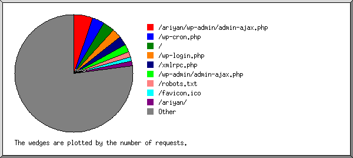
Listing files with at least 20 requests, sorted by the number of requests.
| #reqs | %bytes | last time | file |
|---|---|---|---|
| 775 | 0.54% | Aug/31/18 9:44 AM | /wp-login.php |
| 10 | 0.01% | Aug/15/18 1:42 PM | /wp-login.php?redirect_to=https://www.cyberpollution.org/wp-admin/ |
| 592 | Aug/31/18 11:35 AM | /wp-cron.php | |
| 517 | 8.23% | Aug/31/18 11:40 AM | / |
| 277 | Aug/31/18 11:15 AM | /favicon.ico | |
| 243 | Aug/31/18 7:00 AM | /robots.txt | |
| 122 | 15.83% | Aug/31/18 10:30 AM | /wp-content/uploads/the-core-style.css |
| 67 | 8.15% | Aug/31/18 10:30 AM | /wp-content/uploads/the-core-style.css?ver=1533657832 |
| 23 | 3.02% | Aug/30/18 8:42 AM | /wp-content/uploads/the-core-style.css?ver=1529945106 |
| 119 | 2.59% | Aug/31/18 12:24 AM | /wp-content/plugins/give/assets/dist/js/give.js |
| 55 | 1.27% | Aug/29/18 11:26 PM | /wp-content/plugins/give/assets/dist/js/give.js?ver=2.2.2 |
| 24 | 0.52% | Aug/16/18 4:44 AM | /wp-content/plugins/give/assets/dist/js/give.js?ver=2.1.7 |
| 24 | 0.40% | Aug/31/18 12:24 AM | /wp-content/plugins/give/assets/dist/js/give.js?ver=2.2.3 |
| 101 | 0.06% | Aug/31/18 5:29 AM | /wp-content/plugins/translatepress-multilingual/assets/css/trp-language-switcher.css |
| 43 | 0.03% | Aug/27/18 5:15 PM | /wp-content/plugins/translatepress-multilingual/assets/css/trp-language-switcher.css?ver=1.2.7 |
| 26 | 0.01% | Aug/31/18 12:24 AM | /wp-content/plugins/translatepress-multilingual/assets/css/trp-language-switcher.css?ver=1.2.8 |
| 15 | 0.01% | Aug/16/18 4:45 AM | /wp-content/plugins/translatepress-multilingual/assets/css/trp-language-switcher.css?ver=1.2.6 |
| 101 | 1.28% | Aug/31/18 5:29 AM | /wp-content/plugins/give/assets/dist/css/give.css |
| 45 | 0.61% | Aug/27/18 5:15 PM | /wp-content/plugins/give/assets/dist/css/give.css?ver=2.2.2 |
| 25 | 0.25% | Aug/31/18 1:41 AM | /wp-content/plugins/give/assets/dist/css/give.css?ver=2.2.3 |
| 15 | 0.19% | Aug/16/18 4:44 AM | /wp-content/plugins/give/assets/dist/css/give.css?ver=2.1.7 |
| 98 | Aug/31/18 11:36 AM | /am/wp-cron.php | |
| 97 | 0.04% | Aug/31/18 3:08 AM | /wp-content/plugins/translatepress-multilingual/assets/css/trp-floater-language-switcher.css |
| 44 | 0.02% | Aug/30/18 8:42 AM | /wp-content/plugins/translatepress-multilingual/assets/css/trp-floater-language-switcher.css?ver=1.2.7 |
| 23 | 0.01% | Aug/31/18 3:08 AM | /wp-content/plugins/translatepress-multilingual/assets/css/trp-floater-language-switcher.css?ver=1.2.8 |
| 16 | 0.01% | Aug/16/18 4:45 AM | /wp-content/plugins/translatepress-multilingual/assets/css/trp-floater-language-switcher.css?ver=1.2.6 |
| 94 | 0.63% | Aug/31/18 9:36 AM | /wp-content/plugins/unyson/framework/static/libs/font-awesome/css/font-awesome.min.css |
| 71 | 0.45% | Aug/31/18 9:36 AM | /wp-content/plugins/unyson/framework/static/libs/font-awesome/css/font-awesome.min.css?ver=2.7.19 |
| 92 | 0.04% | Aug/31/18 8:18 AM | /wp-content/themes/philanthropy-parent/style.css |
| 69 | 0.03% | Aug/31/18 12:24 AM | /wp-content/themes/philanthropy-parent/style.css?ver=4.9.8 |
| 91 | 0.92% | Aug/31/18 8:18 AM | /wp-content/themes/philanthropy-parent/css/jquery.mmenu.all.css |
| 62 | 0.60% | Aug/31/18 12:24 AM | /wp-content/themes/philanthropy-parent/css/jquery.mmenu.all.css?ver=2.0.18 |
| 20 | 0.21% | Aug/31/18 8:18 AM | /wp-content/themes/philanthropy-parent/css/jquery.mmenu.all.css?ver=2.0.17 |
| 87 | 2.32% | Aug/31/18 12:24 AM | /wp-content/themes/philanthropy-parent/css/bootstrap.css |
| 63 | 1.64% | Aug/31/18 12:24 AM | /wp-content/themes/philanthropy-parent/css/bootstrap.css?ver=2.0.18 |
| 17 | 0.46% | Aug/30/18 9:40 PM | /wp-content/themes/philanthropy-parent/css/bootstrap.css?ver=2.0.17 |
| 87 | 0.53% | Aug/31/18 12:24 AM | /wp-content/themes/philanthropy-parent/js/lib/bootstrap.min.js |
| 60 | 0.35% | Aug/31/18 12:24 AM | /wp-content/themes/philanthropy-parent/js/lib/bootstrap.min.js?ver=2.0.18 |
| 19 | 0.12% | Aug/30/18 9:40 PM | /wp-content/themes/philanthropy-parent/js/lib/bootstrap.min.js?ver=2.0.17 |
| 86 | 0.37% | Aug/31/18 12:24 AM | /wp-content/themes/philanthropy-parent/css/prettyPhoto.css |
| 59 | 0.25% | Aug/31/18 12:24 AM | /wp-content/themes/philanthropy-parent/css/prettyPhoto.css?ver=2.0.18 |
| 20 | 0.09% | Aug/30/18 1:10 PM | /wp-content/themes/philanthropy-parent/css/prettyPhoto.css?ver=2.0.17 |
| 86 | 0.49% | Aug/31/18 1:41 AM | /wp-content/themes/philanthropy-parent/js/lazysizes.min.js |
| 58 | 0.32% | Aug/31/18 1:41 AM | /wp-content/themes/philanthropy-parent/js/lazysizes.min.js?ver=2.0.18 |
| 17 | 0.10% | Aug/30/18 9:40 PM | /wp-content/themes/philanthropy-parent/js/lazysizes.min.js?ver=2.0.17 |
| 86 | 0.05% | Aug/31/18 1:41 AM | /wp-content/themes/philanthropy-parent/js/lib/html5shiv.js |
| 60 | 0.03% | Aug/31/18 1:41 AM | /wp-content/themes/philanthropy-parent/js/lib/html5shiv.js?ver=2.0.18 |
| 17 | 0.01% | Aug/30/18 8:42 AM | /wp-content/themes/philanthropy-parent/js/lib/html5shiv.js?ver=2.0.17 |
| 86 | 0.08% | Aug/31/18 3:07 AM | /wp-content/themes/philanthropy-parent/js/lib/respond.min.js |
| 62 | 0.06% | Aug/31/18 3:07 AM | /wp-content/themes/philanthropy-parent/js/lib/respond.min.js?ver=2.0.18 |
| 16 | 0.02% | Aug/29/18 11:41 AM | /wp-content/themes/philanthropy-parent/js/lib/respond.min.js?ver=2.0.17 |
| 85 | 0.70% | Aug/31/18 5:29 AM | /wp-content/plugins/revslider/public/assets/css/settings.css |
| 81 | 0.66% | Aug/31/18 1:41 AM | /wp-content/plugins/revslider/public/assets/css/settings.css?ver=5.4.7.4 |
| 85 | 0.20% | Aug/31/18 12:24 AM | /wp-content/themes/philanthropy-parent/js/jquery.touchSwipe.min.js |
| 57 | 0.13% | Aug/31/18 12:24 AM | /wp-content/themes/philanthropy-parent/js/jquery.touchSwipe.min.js?ver=2.0.18 |
| 17 | 0.04% | Aug/25/18 7:35 PM | /wp-content/themes/philanthropy-parent/js/jquery.touchSwipe.min.js?ver=2.0.17 |
| 84 | 0.01% | Aug/31/18 12:24 AM | /wp-content/themes/philanthropy-child/style.css |
| 58 | 0.01% | Aug/31/18 12:24 AM | /wp-content/themes/philanthropy-child/style.css?ver=2.0.18 |
| 19 | Aug/30/18 9:40 PM | /wp-content/themes/philanthropy-child/style.css?ver=2.0.17 | |
| 84 | 1.29% | Aug/31/18 5:29 AM | /wp-content/themes/philanthropy-parent/css/animate.css |
| 61 | 0.91% | Aug/31/18 12:24 AM | /wp-content/themes/philanthropy-parent/css/animate.css?ver=2.0.18 |
| 15 | 0.24% | Aug/31/18 5:29 AM | /wp-content/themes/philanthropy-parent/css/animate.css?ver=2.0.17 |
| 84 | 0.65% | Aug/31/18 5:29 AM | /wp-content/themes/philanthropy-parent/js/jquery.mmenu.min.all.js |
| 60 | 0.45% | Aug/31/18 12:24 AM | /wp-content/themes/philanthropy-parent/js/jquery.mmenu.min.all.js?ver=2.0.18 |
| 16 | 0.13% | Aug/31/18 5:29 AM | /wp-content/themes/philanthropy-parent/js/jquery.mmenu.min.all.js?ver=2.0.17 |
| 84 | 0.06% | Aug/31/18 12:24 AM | /wp-content/themes/philanthropy-parent/js/jquery.customInput.js |
| 61 | 0.04% | Aug/31/18 12:24 AM | /wp-content/themes/philanthropy-parent/js/jquery.customInput.js?ver=2.0.18 |
| 17 | 0.01% | Aug/30/18 9:40 PM | /wp-content/themes/philanthropy-parent/js/jquery.customInput.js?ver=2.0.17 |
| 83 | 0.23% | Aug/31/18 12:24 AM | /wp-content/themes/philanthropy-parent/js/lib/modernizr.min.js |
| 59 | 0.16% | Aug/31/18 12:24 AM | /wp-content/themes/philanthropy-parent/js/lib/modernizr.min.js?ver=2.0.18 |
| 17 | 0.05% | Aug/30/18 9:40 PM | /wp-content/themes/philanthropy-parent/js/lib/modernizr.min.js?ver=2.0.17 |
| 83 | 0.21% | Aug/31/18 5:29 AM | /wp-includes/js/wp-emoji-release.min.js |
| 69 | 0.17% | Aug/30/18 4:02 PM | /wp-includes/js/wp-emoji-release.min.js?ver=4.9.8 |
| 82 | 0.69% | Aug/31/18 12:24 AM | /wp-content/themes/philanthropy-parent/js/selectize.min.js |
| 58 | 0.47% | Aug/31/18 12:24 AM | /wp-content/themes/philanthropy-parent/js/selectize.min.js?ver=2.0.18 |
| 18 | 0.16% | Aug/27/18 12:11 PM | /wp-content/themes/philanthropy-parent/js/selectize.min.js?ver=2.0.17 |
| 82 | 0.90% | Aug/31/18 12:24 AM | /wp-content/themes/philanthropy-parent/js/general.js |
| 58 | 0.61% | Aug/31/18 12:24 AM | /wp-content/themes/philanthropy-parent/js/general.js?ver=2.0.18 |
| 15 | 0.17% | Aug/30/18 9:40 PM | /wp-content/themes/philanthropy-parent/js/general.js?ver=2.0.17 |
| 82 | 0.03% | Aug/31/18 5:29 AM | /wp-content/themes/philanthropy-parent/js/jquery.parallax.js |
| 57 | 0.02% | Aug/31/18 12:24 AM | /wp-content/themes/philanthropy-parent/js/jquery.parallax.js?ver=2.0.18 |
| 16 | 0.01% | Aug/31/18 5:29 AM | /wp-content/themes/philanthropy-parent/js/jquery.parallax.js?ver=2.0.17 |
| 81 | 0.04% | Aug/31/18 7:47 AM | /wp-content/themes/philanthropy-parent/js/scrollTo.min.js |
| 57 | 0.03% | Aug/31/18 12:24 AM | /wp-content/themes/philanthropy-parent/js/scrollTo.min.js?ver=2.0.18 |
| 18 | 0.01% | Aug/31/18 7:47 AM | /wp-content/themes/philanthropy-parent/js/scrollTo.min.js?ver=2.0.17 |
| 81 | 0.74% | Aug/31/18 8:18 AM | /wp-content/themes/philanthropy-parent/js/jquery.prettyPhoto.js |
| 57 | 0.50% | Aug/31/18 12:24 AM | /wp-content/themes/philanthropy-parent/js/jquery.prettyPhoto.js?ver=2.0.18 |
| 16 | 0.15% | Aug/31/18 8:18 AM | /wp-content/themes/philanthropy-parent/js/jquery.prettyPhoto.js?ver=2.0.17 |
| 80 | 0.02% | Aug/31/18 8:18 AM | /wp-includes/js/wp-embed.min.js |
| 68 | 0.02% | Aug/31/18 12:24 AM | /wp-includes/js/wp-embed.min.js?ver=4.9.8 |
| 80 | 1.84% | Aug/31/18 3:08 AM | /wp-content/plugins/revslider/public/assets/js/jquery.themepunch.tools.min.js |
| 74 | 1.67% | Aug/31/18 3:08 AM | /wp-content/plugins/revslider/public/assets/js/jquery.themepunch.tools.min.js?ver=5.4.7.4 |
| 80 | 0.35% | Aug/31/18 12:24 AM | /wp-content/plugins/LayerSlider/static/layerslider/css/layerslider.css |
| 74 | 0.31% | Aug/31/18 12:24 AM | /wp-content/plugins/LayerSlider/static/layerslider/css/layerslider.css?ver=6.7.6 |
| 79 | 1.48% | Aug/31/18 10:00 AM | /wp-content/plugins/give/assets/dist/js/babel-polyfill.js |
| 39 | 0.82% | Aug/26/18 4:23 PM | /wp-content/plugins/give/assets/dist/js/babel-polyfill.js?ver=2.2.2 |
| 25 | 0.36% | Aug/31/18 10:00 AM | /wp-content/plugins/give/assets/dist/js/babel-polyfill.js?ver=2.2.3 |
| 15 | 0.30% | Aug/16/18 4:44 AM | /wp-content/plugins/give/assets/dist/js/babel-polyfill.js?ver=2.1.7 |
| 79 | 0.91% | Aug/31/18 5:29 AM | /wp-content/themes/philanthropy-parent/js/jquery.carouFredSel-6.2.1-packed.js |
| 55 | 0.61% | Aug/31/18 12:24 AM | /wp-content/themes/philanthropy-parent/js/jquery.carouFredSel-6.2.1-packed.js?ver=2.0.18 |
| 16 | 0.19% | Aug/31/18 5:29 AM | /wp-content/themes/philanthropy-parent/js/jquery.carouFredSel-6.2.1-packed.js?ver=2.0.17 |
| 75 | 1.01% | Aug/31/18 1:41 AM | /wp-content/plugins/revslider/public/assets/js/jquery.themepunch.revolution.min.js |
| 69 | 0.92% | Aug/31/18 1:41 AM | /wp-content/plugins/revslider/public/assets/js/jquery.themepunch.revolution.min.js?ver=5.4.7.4 |
| 74 | 1.73% | Aug/31/18 5:29 AM | /wp-content/plugins/LayerSlider/static/layerslider/js/layerslider.kreaturamedia.jquery.js |
| 68 | 1.56% | Aug/31/18 12:24 AM | /wp-content/plugins/LayerSlider/static/layerslider/js/layerslider.kreaturamedia.jquery.js?ver=6.7.6 |
| 71 | 0.19% | Aug/31/18 12:24 AM | /wp-includes/js/jquery/ui/effect.min.js |
| 71 | 0.19% | Aug/31/18 12:24 AM | /wp-includes/js/jquery/ui/effect.min.js?ver=1.11.4 |
| 71 | 0.10% | Aug/31/18 11:35 AM | /wp-content/plugins/unyson/framework/extensions/shortcodes/shortcodes/section/static/js/core.js |
| 62 | 0.09% | Aug/31/18 11:35 AM | /wp-content/plugins/unyson/framework/extensions/shortcodes/shortcodes/section/static/js/core.js?ver=4.9.8 |
| 71 | 0.11% | Aug/31/18 12:24 AM | /wp-includes/js/imagesloaded.min.js |
| 71 | 0.11% | Aug/31/18 12:24 AM | /wp-includes/js/imagesloaded.min.js?ver=3.2.0 |
| 71 | 1.69% | Aug/31/18 12:24 AM | /wp-content/plugins/LayerSlider/static/layerslider/js/greensock.js |
| 71 | 1.69% | Aug/31/18 12:24 AM | /wp-content/plugins/LayerSlider/static/layerslider/js/greensock.js?ver=1.19.0 |
| 70 | 0.04% | Aug/31/18 4:20 AM | /wp-content/plugins/unyson/framework/extensions/shortcodes/shortcodes/section/static/css/background.css |
| 62 | 0.03% | Aug/31/18 4:20 AM | /wp-content/plugins/unyson/framework/extensions/shortcodes/shortcodes/section/static/css/background.css?ver=4.9.8 |
| 70 | 0.02% | Aug/31/18 4:20 AM | /wp-content/plugins/unyson/framework/extensions/shortcodes/shortcodes/section/static/js/transition.js |
| 61 | 0.02% | Aug/31/18 4:20 AM | /wp-content/plugins/unyson/framework/extensions/shortcodes/shortcodes/section/static/js/transition.js?ver=4.9.8 |
| 69 | 1.35% | Aug/31/18 12:24 AM | /wp-includes/js/jquery/jquery.js |
| 69 | 1.35% | Aug/31/18 12:24 AM | /wp-includes/js/jquery/jquery.js?ver=1.12.4 |
| 68 | 0.01% | Aug/30/18 3:47 PM | /xmlrpc.php |
| 20 | Aug/30/18 3:47 PM | /xmlrpc.php?rsd | |
| 67 | 0.32% | Aug/31/18 12:24 AM | /wp-content/plugins/LayerSlider/static/layerslider/js/layerslider.transitions.js |
| 61 | 0.29% | Aug/31/18 12:24 AM | /wp-content/plugins/LayerSlider/static/layerslider/js/layerslider.transitions.js?ver=6.7.6 |
| 66 | 0.04% | Aug/30/18 11:24 PM | /wp-json/oembed/1.0/embed |
| 66 | 0.09% | Aug/31/18 4:20 AM | /wp-content/plugins/unyson/framework/extensions/shortcodes/shortcodes/section/static/js/background.js |
| 58 | 0.07% | Aug/31/18 4:20 AM | /wp-content/plugins/unyson/framework/extensions/shortcodes/shortcodes/section/static/js/background.js?ver=4.9.8 |
| 66 | Aug/31/18 12:24 AM | /wp-content/plugins/unyson/framework/extensions/shortcodes/shortcodes/section/static/js/background.init.js | |
| 59 | Aug/31/18 12:24 AM | /wp-content/plugins/unyson/framework/extensions/shortcodes/shortcodes/section/static/js/background.init.js?ver=4.9.8 | |
| 64 | 0.06% | Aug/31/18 12:24 AM | /wp-content/themes/philanthropy-parent/framework-customizations/extensions/media/extensions/slider/extensions/fade-slider/static/js/fade-slider.js |
| 58 | 0.05% | Aug/31/18 12:24 AM | /wp-content/themes/philanthropy-parent/framework-customizations/extensions/media/extensions/slider/extensions/fade-slider/static/js/fade-slider.js?ver=2.7.19 |
| 63 | 0.12% | Aug/31/18 12:24 AM | /wp-includes/js/jquery/jquery-migrate.min.js |
| 63 | 0.12% | Aug/31/18 12:24 AM | /wp-includes/js/jquery/jquery-migrate.min.js?ver=1.4.1 |
| 44 | 0.45% | Aug/30/18 11:24 PM | /contact/ |
| 43 | 2.35% | Aug/29/18 4:18 PM | /wp-admin/load-scripts.php |
| 42 | Aug/31/18 12:24 AM | /wp-content/plugins/translatepress-multilingual/assets/images/flags/en_US.png | |
| 41 | 0.01% | Aug/31/18 12:24 AM | /wp-content/uploads/2016/03/mp.png |
| 41 | Aug/31/18 12:24 AM | /wp-content/uploads/2016/03/t.png | |
| 40 | Aug/31/18 12:24 AM | /wp-content/uploads/2016/03/view-all.png | |
| 38 | Aug/31/18 12:24 AM | /wp-content/uploads/2016/03/footer-social-facebook.png | |
| 38 | Aug/31/18 12:24 AM | /wp-content/uploads/2016/03/footer-social-google.png | |
| 38 | Aug/31/18 12:24 AM | /wp-content/uploads/2016/03/footer-social-skype.png | |
| 37 | 0.08% | Aug/30/18 3:44 PM | /wp-content/themes/philanthropy-parent/images/patterns/noise_pattern.png |
| 37 | 2.30% | Aug/29/18 4:18 PM | /wp-admin/load-styles.php |
| 15 | 1.02% | Aug/29/18 4:18 PM | /wp-admin/load-styles.php?c=0&dir=ltr&load[]=dashicons,admin-bar,common,forms,admin-menu,dashboard,list-tables,edit,revisions,media,themes,about,nav-menus,wp-pointer,widgets&load[]=,site-icon,l10n,buttons,wp-auth-check,wp-jquery-ui-dialog,wp-color-picker&ver=4.9.8 |
| 37 | 0.58% | Aug/30/18 11:25 PM | /wp-content/plugins/give/readme.txt |
| 37 | 0.33% | Aug/31/18 9:36 AM | /placed-an-order-2/ |
| 36 | 0.80% | Aug/31/18 9:25 AM | /am/ |
| 34 | 0.06% | Aug/31/18 12:24 AM | /wp-content/uploads/2018/05/AAAA.jpeg |
| 34 | 0.27% | Aug/30/18 11:24 PM | /digital-forensic/ |
| 32 | 0.27% | Aug/30/18 3:48 PM | /get-involved/ |
| 32 | 0.33% | Aug/30/18 3:35 PM | /wp-content/uploads/2018/05/digital-foresic.jpeg |
| 32 | 0.10% | Aug/31/18 12:24 AM | /wp-content/uploads/2018/05/bbbb.jpeg |
| 31 | 0.56% | Aug/30/18 11:24 PM | /pricing/ |
| 31 | 0.36% | Aug/30/18 3:48 PM | /about/our-team/ |
| 31 | 0.05% | Aug/ 8/18 2:40 PM | /am/wp-admin/admin-ajax.php |
| 31 | 0.43% | Aug/29/18 4:18 PM | /wp-admin/update-core.php |
| 31 | 0.25% | Aug/31/18 2:56 AM | /our-vission/ |
| 29 | 0.26% | Aug/31/18 5:18 AM | /about/faq/ |
| 27 | 0.21% | Aug/30/18 3:48 PM | /website-hacked/ |
| 27 | 0.21% | Aug/30/18 10:12 PM | /about-us/ |
| 27 | 0.22% | Aug/30/18 3:48 PM | /about/our-mission/ |
| 25 | 0.27% | Aug/30/18 10:12 PM | /events/ |
| 25 | 0.19% | Aug/30/18 3:48 PM | /cyber-security/ |
| 25 | 0.12% | Aug/31/18 12:24 AM | /wp-content/uploads/2018/05/dddd.jpeg |
| 25 | 0.12% | Aug/31/18 12:24 AM | /wp-content/uploads/2018/05/ccc.jpeg |
| 24 | 0.18% | Aug/31/18 10:59 AM | /emergency/ |
| 24 | 0.19% | Aug/30/18 10:12 PM | /event-response/ |
| 23 | 0.57% | Aug/30/18 3:28 PM | /wp-content/uploads/2018/05/provide-cyber-c.jpg |
| 21 | 0.04% | Aug/30/18 3:38 PM | /readme.html |
| 20 | 0.83% | Aug/30/18 3:44 PM | /wp-content/plugins/unyson/framework/static/libs/font-awesome/fonts/fontawesome-webfont.ttf |
| 20 | 0.83% | Aug/30/18 3:44 PM | /wp-content/plugins/unyson/framework/static/libs/font-awesome/fonts/fontawesome-webfont.ttf?v=4.7.0 |
| 2012 | 35.73% | Aug/31/18 11:41 AM | [not listed: 796 files] |